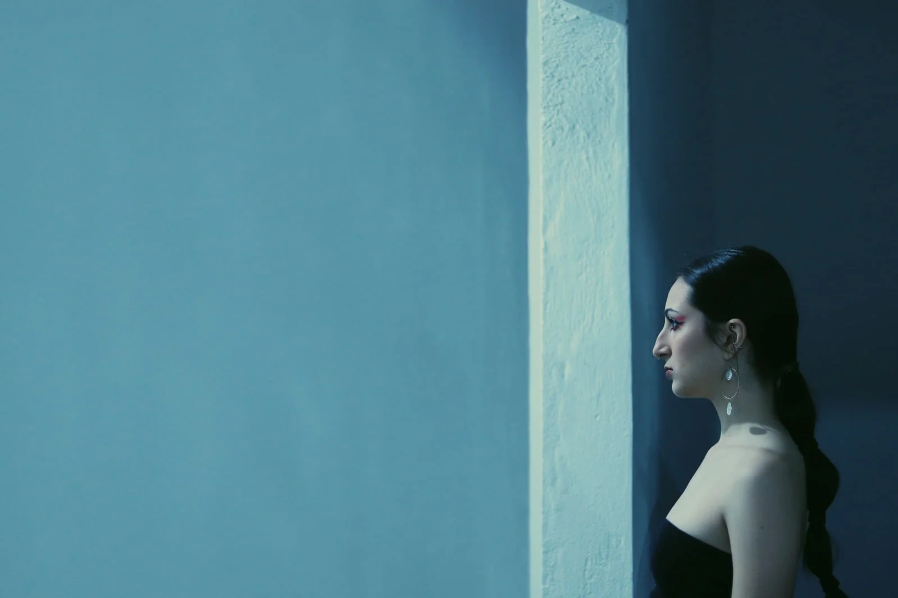
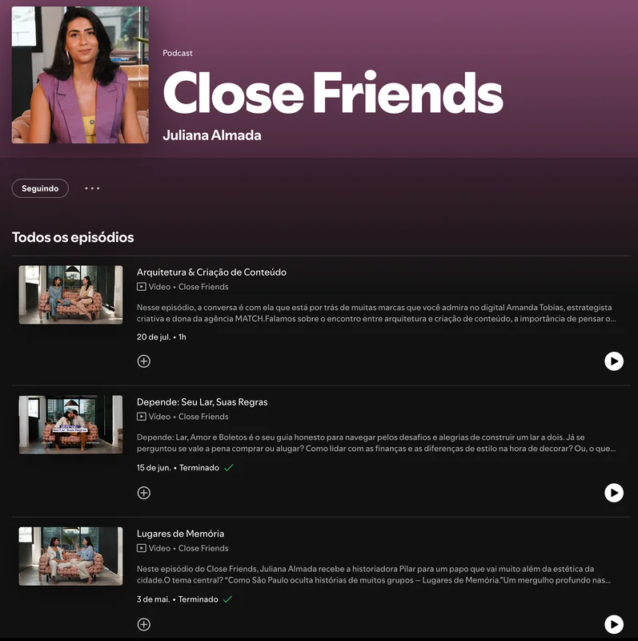
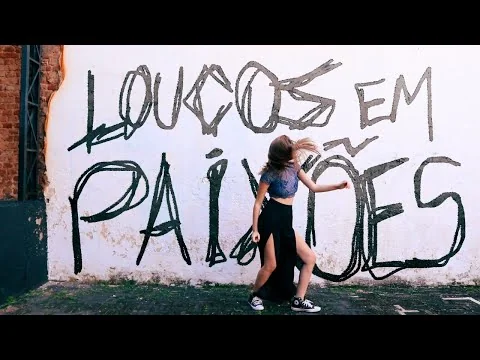
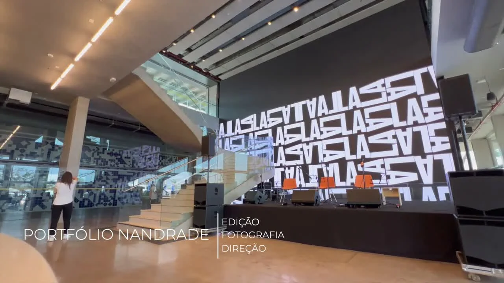
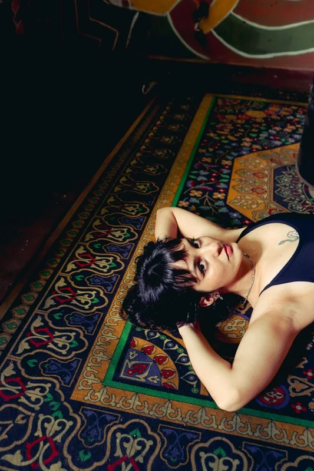
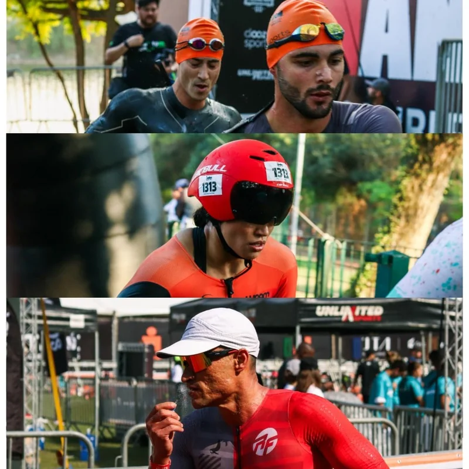
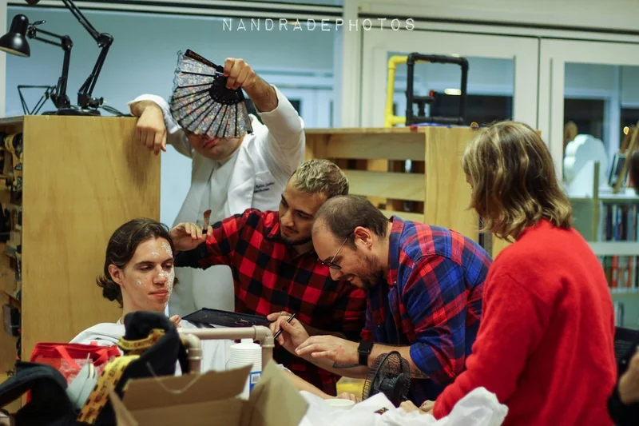
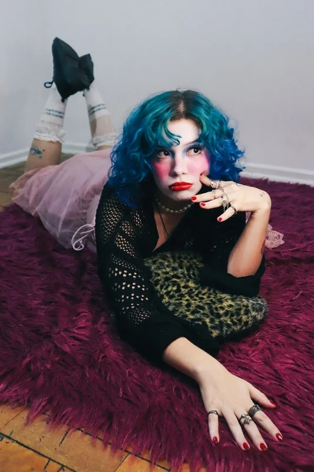
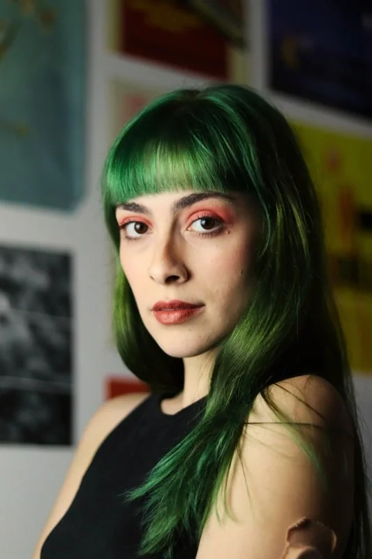

Ver projeto
Ver projeto A Rosa
Direção, roteiro, produção e edição
Do primeiro olhar ao último corte.
Construo narrativas com ritmo, sensibilidade
e intenção.

01 A intenção
Ritmo, composição, som e escuta. O trabalho acontece no encontro entre o que uma imagem mostra e o que uma história faz sentir.
02 Portfólio
Entre a criação autoral e a construção coletiva.
Uma seleção de histórias que ajudei a dar forma.
Ver projeto Direção, roteiro, produção e edição
 Ver projeto
Ver projeto Assistência de direção, edição, produção e social media
 Ver projeto
Ver projeto Direção, roteiro e edição

Ver projetoEdição

Ver projetoMaking of e assistência de direção
 Ver projeto
Ver projeto Direção de pauta e direção de switcher
 Ver projeto
Ver projeto Fotografia e direção de atores
 Ver projeto
Ver projeto Fotografia
 Ver projeto
Ver projeto Direção de fotografia e câmera
 Ver projeto
Ver projeto Participação como convidada
 Ver projeto
Ver projeto Direção, roteiro e coreografia
03 Edição
Montar é encontrar a relação entre planos, pausas e som. Do cinema independente ao podcast, cada formato pede uma escuta e uma linguagem próprias.
Conhecer Close Friends
Abrir vídeo do portfólio04 Fotografia
Retratos, encontros e pequenos gestos.
Um olhar para o que merece permanecer.




05 Serviços
Frentes que se conectam à necessidade do seu projeto.
Narrativa, ritmo e precisão na montagem de filmes, podcasts, peças digitais e vídeos institucionais.
Filmes, episódios e peças digitaisUm olhar atento à presença, à luz e ao detalhe. Retratos, ensaios para marcas, eventos e projetos autorais.
Ensaios e registros fotográficosConstrução de linguagem e narrativa em videoclipes e projetos autorais, do roteiro à realização.
Roteiro e direção de filmes e videoclipesRegistro de processos, bastidores e imagens em movimento, em diálogo com a equipe e a intenção de cada projeto.
Captação de vídeo e bastidores06 Sobre

Meu trabalho transita pela imagem, pelo som, pela edição e pela escrita. Me interessa o detalhe, o gesto e a construção de narrativas com escuta e intenção.
Sou formada em Produção Audiovisual pela FAPCOM. Minha trajetória inclui obras para museus e instituições culturais no Estúdio Preto e Branco, a edição do podcast Close Friends e projetos autorais e comerciais de fotografia e cinema.
Natural de Sorocaba, iniciei minha prática com fotografia em 2016. Em 2021, a experiência com a Riplay Audiovisual me levou a São Paulo, ampliando o diálogo entre o set, a ilha de edição e a criação autoral.
Conheça minha trajetória07 Como podemos trabalhar
Cada projeto pede um percurso. Podemos construir o seu a partir destas etapas, ajustadas ao formato e à equipe.
Entender a ideia, o público e as referências.
Definir narrativa, ritmo e linguagem visual.
Dar forma à peça, na captação ou na edição.
Conversar sobre ajustes e cuidar da entrega.
08 Próxima história
São Paulo · Sorocaba
Conte um pouco sobre sua ideia.
Vamos encontrar a linguagem que ela pede.